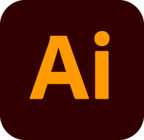
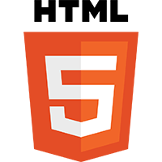
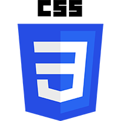
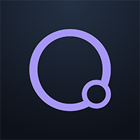
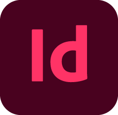
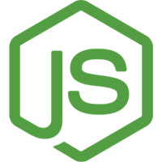

In short
I love designing, I love making websites. I'm constantly learning and evolving and becoming a better and stronger (and more capable) designer.
Besides being a graphic designer, I'm also a web developer, both front-end and backend developing are of my interest.
History
2013: Graphic Design
I learned how to use Photoshop by myself watching a lot of YouTube and started making posters and flyers for small local companies.
In between the years, I also learned about Illustrator, also by watching a lot of YouTube...

2015: WordPress
I started making some small websites in WordPress using existing themes. I had a basic knowledge of HTML / CSS from school.


2016: WordPress Theme Building
After getting experience using WordPress, I quickly started creating my own theme using tools like Elementor.
2017: WordPress Advanced Theme Building
Elementor wasn't enough and lacked in getting more creative in the design. So I started using Oxygen Builder, which is more barebone HTML and CSS with capabilities of adding some extra scripts.

2018: Even more Graphic Design
I got a bit of a creative block, so I quit everything I did before and went to evening school for 2 years learning more about graphic design. This is where I really grew a lot and got very advanced in Photoshop, Illustrator and InDesign (Btw, I LOVE InDesign!)

2021: Web Design
I wanted to become a more advanced web developer and started a graduate at Artevelde Hogeschool, in which I learned more advanced frameworks, database use etc.
